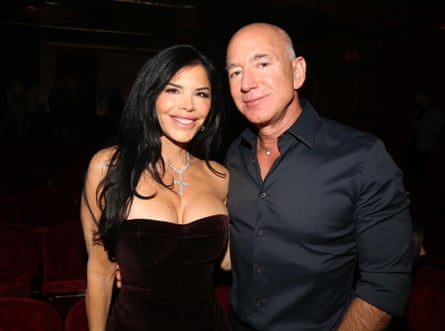
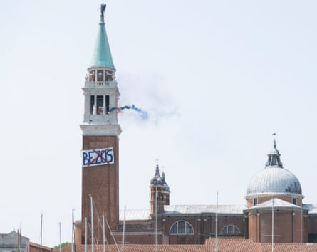
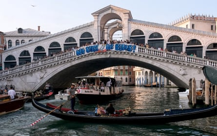
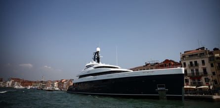

W hen she heard that Jeff Bezos was getting married in Venice this June, Heather Jane Johnson felt worse than she had in her entire life. Twenty-five years ago, she ceased trading as a bookseller in Boston, Massachusetts. “I lost a lot because of Bezos and the complicity of Americans in the making of Amazon,” the 53-year-old says. “A big reason I moved to Italy is because I felt betrayed by my countrypeople.”
So when posters went up calling a public meeting in the city she now calls home, she went, and she has been to every meeting of anti-Bezos activists since, including one the day before her own wedding last week. “These young people have really restored my faith in humanity,” Johnson says.
Many of the No Space for Bezos activists are based in Laboratorio Occupato Morion, which describes itself as an “anti-fascist, anti-capitalist, anti-racist and trans-feminist political space”. “Let’s say that this is the house of many struggles,” says Federica Toninello, 33. It has the same vaulted ceiling and grand proportions as its neighbours, but is full of banners and placards, ready to festoon Venice for Bezos’s wedding celebrations, which are due to start on Thursday. (I spotted no billionaires when I visited on Sunday, but then they have a powerful drive towards invisibility.) It could be any countercultural collective, except this is Venice, so everything is a hundred times more beautiful. Striking, timeless graphics from past campaigns plaster the walls – No Big Ships, an anti-cruise, anti-tourist campaign, which started here before spreading across Europe; No One Is Illegal, a grassroots refugee solidarity movement; posters on the climate crisis, the housing shortage, and one from a pop-up feminist union representing the city’s maids.
‘I don’t think he is welcome’ … Bezos with his fiancee, Lauren Sánchez.Photograph: Bruce Glikas/WireImage
Noemi Donà, 19, is from the USG (loosely, the union of left youth); Oliver, 43, came via the “Sardines” , an anti-racist group set up to fight the hard-right Lega Nord. He works as a receptionist in a Venice hotel – not one of the hyper-luxe ones, just “a small, 14th-century palace” – but has his eye on the economy beyond tourism. “Bezos can pay, he can stay,” he says, “but thousands of shops in Italy have closed because of Amazon. So I don’t think he is welcome.” There’s a university collective that meets here, which occupied a number of campuses last year, protesting about the Israeli bombardment of Gaza.
The air is delicious and a bit headachey with the smell of aerosol and felt-tip pens. Some banners say Free Palestine; others say Stop Bombing Iran. Palestina Libre is an active organisation across Italy , and the US’s attack on Iran is still less than 24 hours old and deeply shocking. But if No Space for Bezos – “it’s not a collective, it’s a platform”, says Marta Sottoriva, a 34-year-old secondary school teacher – has ambitions that feel unimaginably large, it has already achieved some of what it wants, after only a few weeks.
“If Bezos had announced his marriage here, and we hadn’t moved, the narrative in the world’s media would have been the luxury hotels, the VIPs, the dresses, the gossip,” says Sottoriva. “We really wanted to problematise the ridiculous and obscene wealth that allows a man to rent a city for three days.”
On 12 June, the movement unfurled its simplest and largest banner – eight metres long, featuring just Bezos’s name crossed out in red – down the bell tower of the San Giorgio Maggiore basilica, while the deeply unpopular city mayor, Luigi Brugnaro, was trying to do a press conference. Toninello laughingly describes their slanging match on social media: “He was saying, ‘For shame!’ and we were saying, ‘ You should be ashamed!’” Activists put up a similar banner on the Rialto bridge in the same week.
The protest at San Giorgio Maggiore.Photograph: Marta Sottoriva
They have already shifted the focus from: “How much money does that one man have?” to the more interesting: “How much disruption can No Space for Bezos cause? What kind of numbers will they get? What conversations will they start?” Between Elon Musk handing voters million-dollar cheques and Vladimir Putin ordering up chaos and death like consumables, there is this awful sense of limitlessness to the elite’s purchasing power. If it turned out there was something a billionaire couldn’t buy, and it was something that ought to be simple – a little goodwill, servility, privacy and respect, for him, his fiancee Lauren Sánchez and their 200 friends – well, that would be a really big deal.
Not all the direct action this week will be announced in advance, but one thing has not been kept secret: this Saturday, there will be a demo to block access to the cavernous Scuola Grande della Misericordia, where Bezos planned to hold a big party.
I walked around the building on Sunday evening, just to see what kind of numbers you’d need on the protest to really, comprehensively screw the chance of Kim Kardashian showing up. Along the north wall is a pavement of probably three metres, with a steep drop into the canal, and a narrow bridge, the walkway ending randomly, Venetianly, in a metal gate. The west side has a wider pavement, again with the canal running alongside, with a little bridge to the left that could let police in or protesters out, but only in slow-moving units of maybe seven at a time. It is the most beautiful bridge in the world, unless you count all of Venice’s other bridges, but it’s not built for speedy access. At the front, a square, Misericordia on one edge, canal on the other; 200 protesters could make a lot of trouble for you here.
The rumour is that Bezos is not relying solely on the police but is bringing ex-marines with him, which has only served to make him less popular. “How can you move away a person from the water without injuring that person?” Toninello asks, her tone much more playful than anxious. “We are using our bodies to say: ‘Stop. No more. We don’t want this.’”
According to media reports on Monday, Bezos has been forced to move the party to another venue.
A banner on the Rialto bridge.Photograph: Manuel Silvestri/Reuters
Even if you can picture the city’s exquisite eccentricities – bridges that stop dead at a front door, like the 14th-century lagoon equivalent of a lift that opens into your penthouse; alleyways with framed paintings stuck on the walls, as if that were normal – you still, I promise you, would not understand without pacing it how comically impossible it would be to have an elegant, star-studded party here if even 15 people made it their business to tell you that you weren’t welcome. It crossed my mind that maybe Venice is a decoy, and they’re actually having the parties in Maui.
The activists’ assemblies aired everything – critics say Bezos and Sánchez aren’t great targets for the anti-tourist movement, since they’re bringing just 200 guests, a drop in the ocean for a city that receives 30 million visitors a year. Yet in almost every scenario, Venetians perceive the same disregard from local government. It will effectively close down the centre of the city to please a billionaire; it has the power to limit Airbnb rentals, but declines to do so; it thinks last year’s tourist levy of €5 a day has solved the problem, but seemingly doesn’t consider that, as Sottoriva says, locals “really feel like animals in a zoo, or cartoon characters in Disneyland”.
Sofia, 26, is originally from Barcelona, so she has been around these discussions of overtourism often enough, but she sees something unique in this city, for good and ill. “There is a hidden Venice, which I was lucky enough to find through activism. A very vibrant community where you know each other, and support each other. I don’t mean an intellectual movement – I mean there are places where people do live, where they have neighbourhood suppers, where you can see children playing. The place risks becoming lifeless if you never see children.”
The political vision for a depopulated Venice – made of tourists, its workers coming in from the mainland, and existing as a one-of-a-kind theme park – is made obvious in the mayor’s dealings with the Bezos nuptials. But it also seems to chime with the values of the Amazon boss himself: his behaviour as an employer, his manifest resentment of corporate tax responsibility, an antisocial, anti-equality attitude that you’d be able to see from space, if he thought you were worthy of going there.
Michael Jordan’s yacht docked in Venice ahead of Bezos’s wedding.Photograph: Yara Nardi/Reuters
Climate change activists have other, intersecting complaints. Never mind that Amazon “promotes a culture of extreme, overexaggerated consumption”, says Stella Faye, a 27-year-old university researcher, “it represents a model of exploitation of people and of nature. It depends on huge amounts of electricity, for the servers, and then huge amounts of water resources to cool the servers, which are often placed in arid areas. So they’re taking water resources from regions where people desperately need them.”
Politically, Bezos has swung from what everyone always assumed was mild support for the Democrats to active support for Trump. “We are not seeing a multibillionaire bending to Trump,” Sottoriva says, “we are seeing a new political grammar in which the private interests of digital capitalism and technocapitalism merge with fascism. This is not just about Venice.”
What might conceivably trouble Bezos the most is the burgeoning critique of billionaires not as individuals, but as a structural force. “I would say anti-wealth movements are new,” says Robin Piazzo, a political scientist from Turin university. “Usually Marxists don’t like to focus on people like billionaires: they use concepts such as capitalism, objective things, not specific people. So most of the extra-parliamentary left avoided the wealthy themselves. And when the institutional left focused on, for example, Berlusconi, it was not framed as: ‘He is too rich.’ The problem was that he was using his money to influence politics and the media. It was always about good billionaires and bad ones, because they wanted to co-opt the good ones.”
At a grassroots level, however, there has always been a strong strain of anti-wealth critique, the one thing religion and politics could agree on. Piazzo is also a city councillor for the Democratic party, the largest centre-left party. A 90-year-old woman came up to him after the last council meeting and said, “You have to do something about rich people, I hate them. I’m with Papa Francisco [Pope Francis].” This is a dangerous moment for the ultra-high-net-worths: when wealth itself is seen to be acting in its own interests, and it has accumulated to the degree that its impact scars every poorer life with which it comes into contact, that starts to look a lot like a class war, albeit with one side very small (there are roughly 2,700 billionaires in the world; they could fit into a regional concert hall) and, until recently, almost invisible.
So at some point, wealth will show its teeth. I think back to the last protest I went to in Italy, the G8 summit in Genoa, 2001 . The policing was unbelievably reactive and harsh; a protester called Carlo Giuliani was shot dead on the first night by the carabinieri. I was with British lefties, whose first reaction when the police come at you is to run down a side street – a great strategy if you’re being charged by a horse, a terrible idea if you’re being teargassed. You get stuck in this well of gas, and it gets in your vagina, which weirdly nobody ever mentions. It’s much worse than the eyes.
After the death of Giuliani, the Corpo Forestale was brought in: very distinctive uniforms, powder blue with knee-high black boots, hitting people with batons, a little bit like Nazis choreographed by Busby Berkeley. But what was most surreal was that the G8 had already erected an almost impenetrable metal fence. Only one protester managed to get through and she was arrested immediately. In that steel-ring protection was an admission: that those heads of state were the enemy, all our interests were not aligned.
Twenty-four years later, there’s something gaslighty in Bezos’s decision that he could represent all he represents – wage degradation, hyper-consumerism, environmental destruction, wealth supremacy – and still be a regular Joe that the people of Venice would be happy for, because he’d met his special person. What an out-and-out bizarre and provocative place to say that – a city with non-negotiable borders and a cliff edge into a canal every 50 yards. “I am afraid, personally,” says Noemi Donà. “But I’m here.”